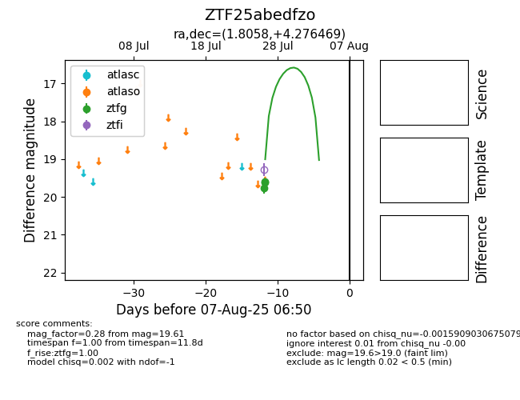

Target ZTF25abedfzo at 2025-08-07 07:30, see:
FINK: fink-portal.org/ZTF25abedfzo
Lasair: lasair-ztf.lsst.ac.uk/objects/ZTF25abedfzo
ALeRCE: alerce.online/object/ZTF25abedfzo
alt names
ZTF25abedfzo (ztf,fink)
coordinates:
equatorial (ra, dec) = (1.8058,+4.27647)
galactic (l, b) = (102.4785,-56.82915)
photometry
last ztfg=19.61
3 ztfg detections
